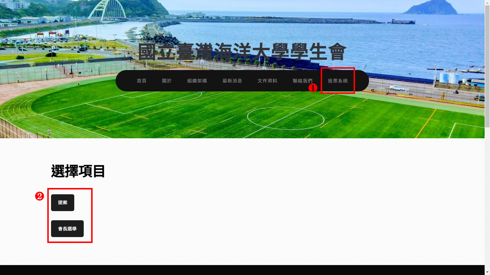
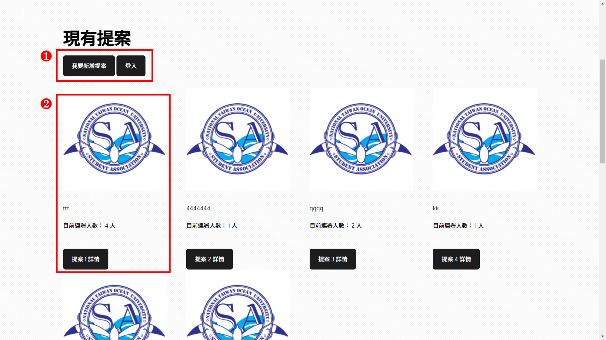
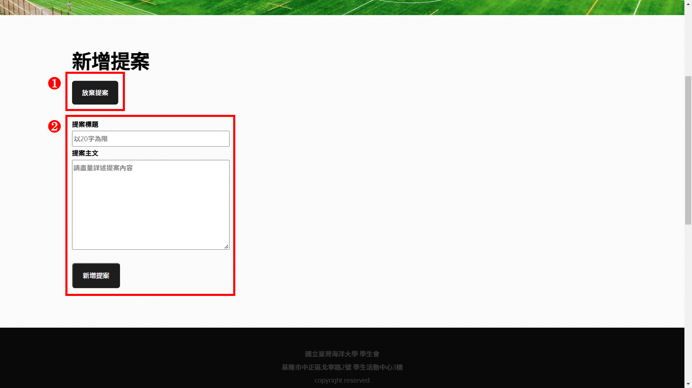
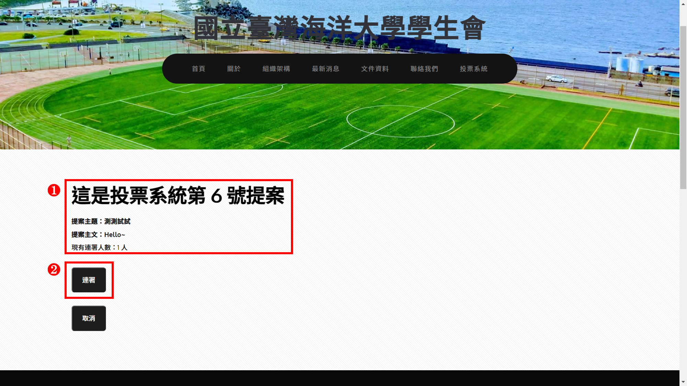
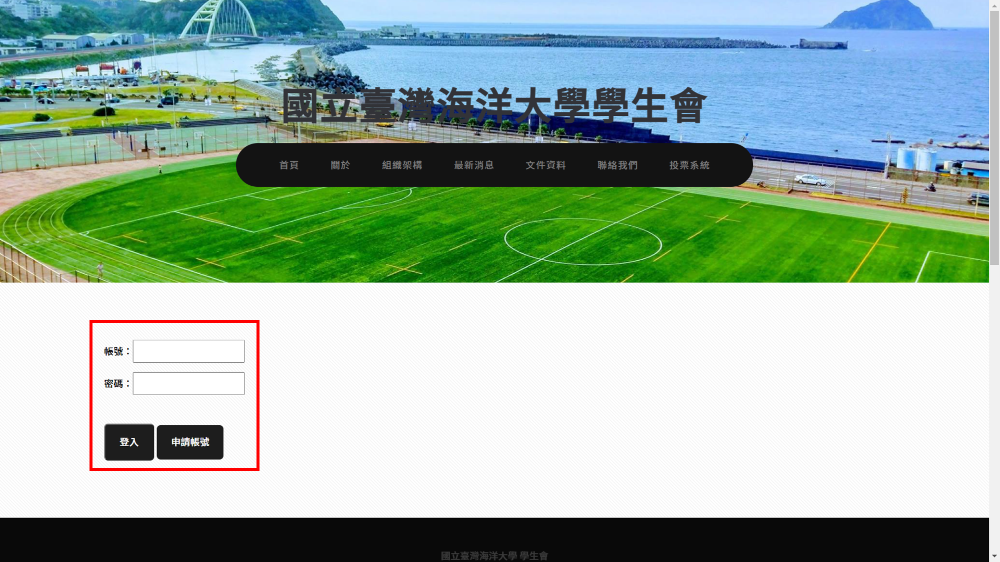
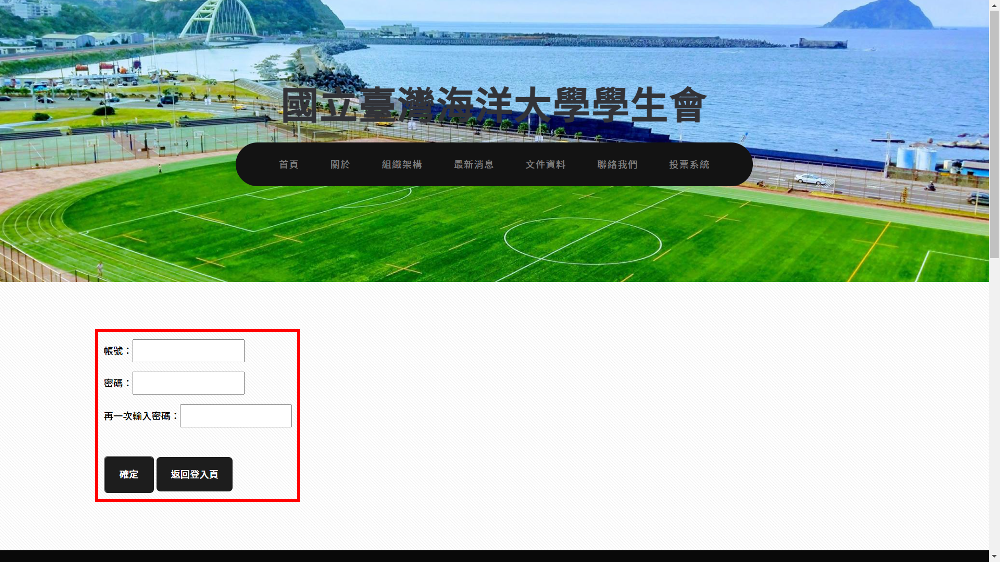
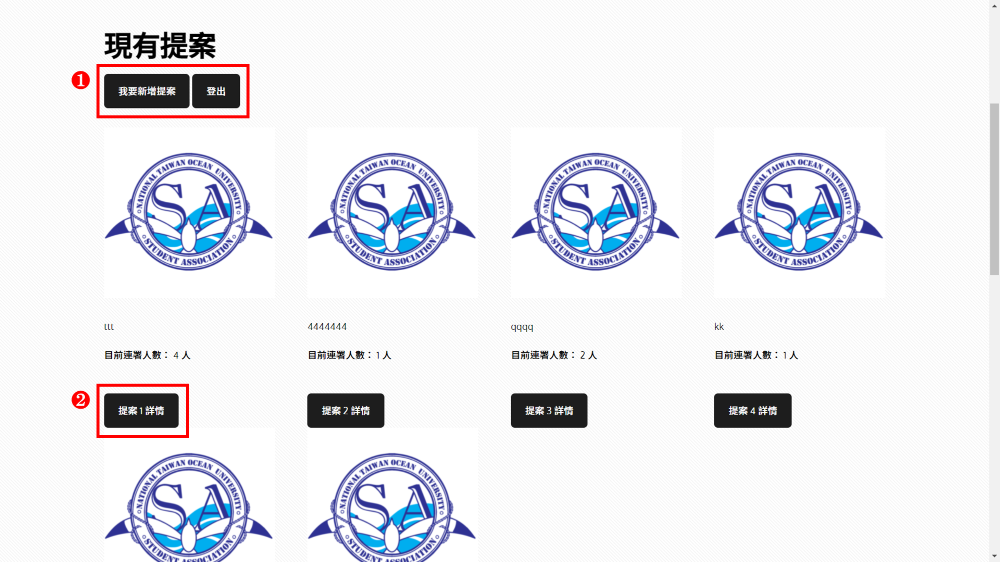
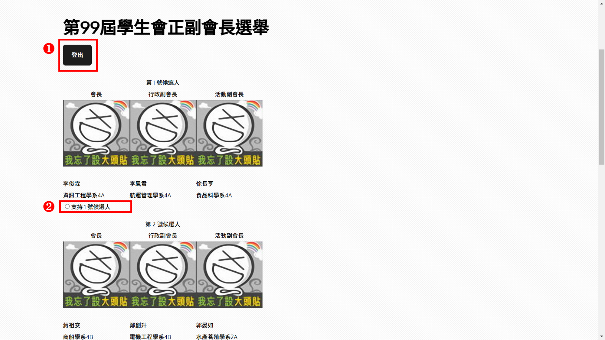

簡介：
海大學生會長期使用FaceBook做為唯一的對外窗口，並仰賴校方提供的教學務系統作為選舉平台，也缺乏展現直接民意的連署平台。
在參與學生會務時期，考量FaceBook貼文不易回顧、選舉獨立性及連署功能的需求，產生使用學生會NAS自行架站的想法。
主要運用HTML、CSS、JavaScript、PHP建立簡易的註冊及投票系統。

說明：
- 點選進入學生會網站的「投票系統」
- 可以選擇連署用的「提案」或是一年一度「會長選舉」
<說明圖1>
-
以連署用的「提案」為例，首先會看到上方的「我要新增提案」
如果還未登入則會顯示「登入」按鈕 - 下方區域會顯示現有的提案，包含標題及目前連署人數，點選「提案詳情」可以查看提案主文
<說明圖2>
- 新增提案的頁面可以點選「放棄提案」離開
-
若要新增提案，請填寫標題及主文後，點選「新增提案」，會檢查是否已經登入及欄位是否都有填寫完喔
另外，只要提案就預設你是連署人之一，不用再回來連署囉
<說明圖3>
- 選擇一項提案查看詳情後，會進入到該提案專屬頁面，並顯示提案主題、主文及現有連署人數
-
選擇「連署」時會驗證是否已經登入及是否曾經連署過
若尚未登入則跳出通知並跳轉至登入頁
若已經登入且已經連署過，則會跳出通知並告知已經連署過了
<說明圖4>
- 主動點選登入或是跳轉進入登入頁時，可以填寫註冊的帳號密碼，或是申請新的帳號
<說明圖5>
-
建議申請新帳號來做測試
因做為測試用途，故省略大部分個資填寫流程，僅需填寫帳號密碼即可註冊喔
<說明圖6>
- 在已經登入的情況下，進入提案頁面則會顯示「登出」
- 這次一樣點選「提案詳情」就可以繼續連署步驟
<說明圖7>
- 也可以嘗試「會長選舉」的頁面，一樣會判斷登入狀態顯示對應的按鈕
- 會長選舉為單選題，送出時同樣會驗證是否已經票選過，且為維持選舉公平性，頁面並不會顯示現在的投票人數
<說明圖8>
點選「測試網站」可以測試玩看看喔！
專案原始碼
測試網站